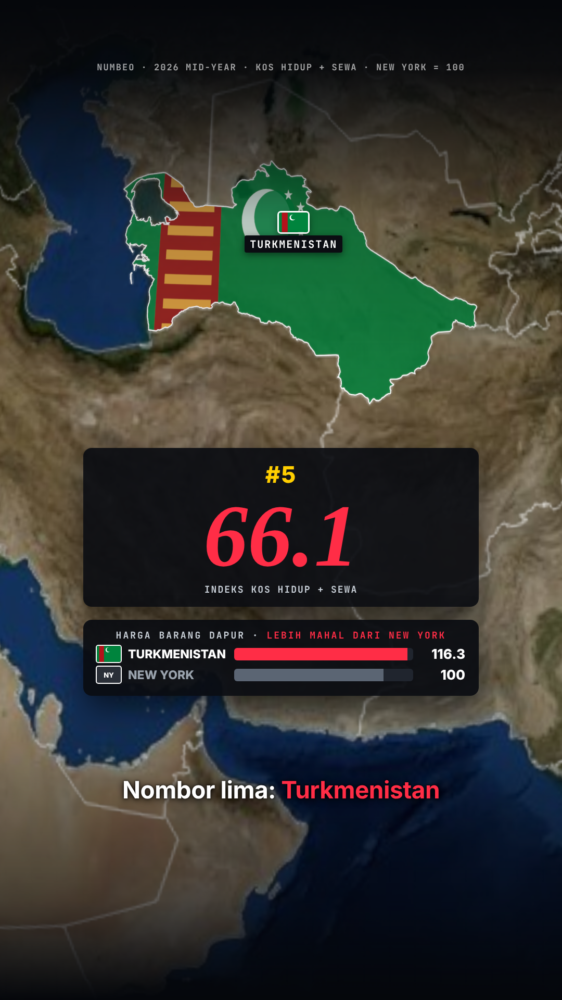
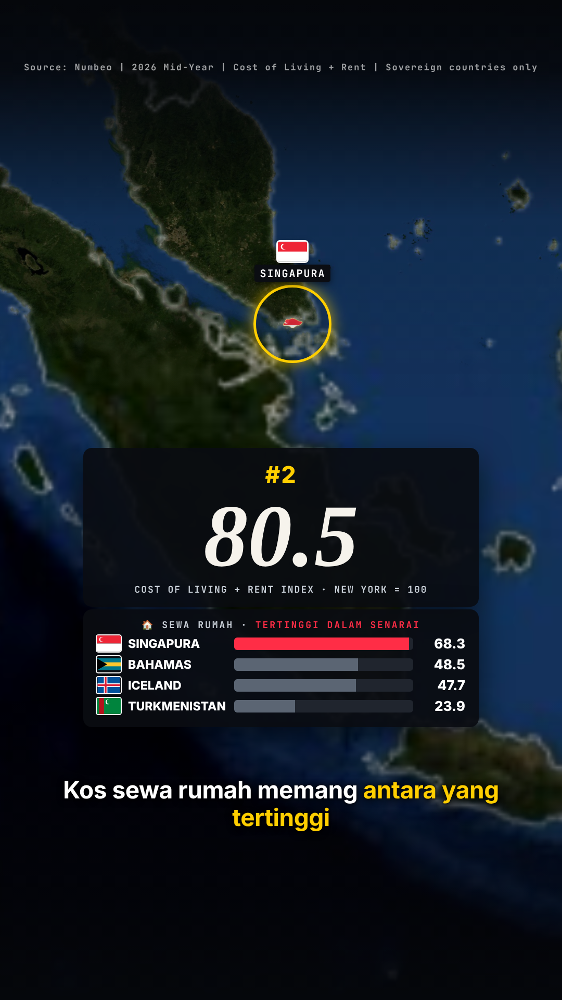
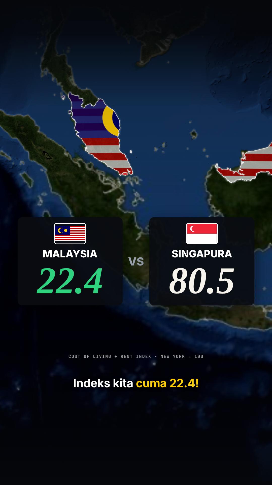
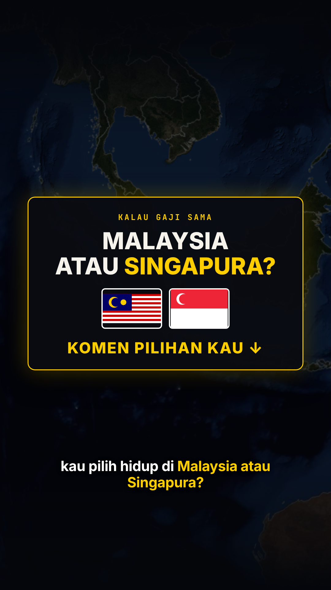

01 · 0:00
Hook A: resit
"Kau ingat Amerika atau Jepun negara paling mahal untuk hidup?"
Resit panjang terjulur, 5 tanda harga merah terbang masuk. Bunyi printer + tick laju.

02 · 0:02
Hook B: SALAH
"Salah! Dua-dua tak masuk Top 5. Dan nombor lima ni memang tak disangka!"
Glob pusing AS → Jepun, bendera, impact hit + cop ✕ SALAH. Tajuk DUA-DUA TAK MASUK TOP 5.

03 · 0:05
Tajuk
"Ini lima negara paling mahal untuk hidup tahun 2026, termasuk kos sewa rumah!"
Glob dari gelap, tiada negara ditanda. TOP 5 emas, chip 2026 · TERMASUK SEWA.

04 · 0:07
#5 Turkmenistan
"Nombor lima, Turkmenistan! Indeks 66.1. Peliknya, indeks harga barang dapur… lebih tinggi daripada New York!"
Fly-to Asia Tengah, bendera isi negara. #5 · 66.1 count-up, bar 116.3 vs NY 100.

05 · 0:13
#4 Iceland
"Nombor empat, Iceland! Indeks 74.8. Pemandangan memang cantik, tapi harga barang dapur boleh buat kau terkejut!"
Snow/smoke dissolve + salji halus, bendera. #4 · 74.8, 🛒 106.3 vs 100.

06 · 0:18
#3 Bahamas
"Nombor tiga, Bahamas! Indeks 77.2. Nampak macam syurga percutian, tapi kos makan di restoran sangat tinggi!"
Whip pan ke Caribbean, pulau bercahaya biru. #3 · 77.2, 🍽️ 115.5 vs 100.

07 · 0:24
Re-hook
"Tapi tunggu! Negara nombor dua ni sebenarnya jiran sebelah Malaysia. Dan nombor satu… bukan negara Arab yang kaya minyak!"
Muzik dip, freeze 0.4 s, heartbeat + boom. Zum ke Asia Tenggara, ? emas. #2 = JIRAN KITA · #1 = ?

08 · 0:29
#2 Singapura
"Nombor dua, Singapura! Indeks 80.5. Kos sewa rumah memang antara yang tertinggi dalam senarai ni!"
Cincin emas, bendera. #2 · 80.5, 🏠 sewa SG 68.3 paling panjang.

09 · 0:35
#1 Switzerland
"Dan nombor satu… Switzerland! Indeks 81.5. …kuasa beli penduduknya juga antara yang paling kuat!"
0.5 s senyap → flash emas, cinematic hit, kad 👑 #1 · 81.5 bingkai emas. Kuasa beli 165.7 · #4 DI DUNIA.

10 · 0:43
Plot twist
"Malaysia pula? Indeks kita cuma 22.4!"
Glob fly home. Dua kad masuk dari kiri dan kanan: MALAYSIA 22.4 vs SINGAPURA 80.5.

11 · 0:48
CTA tunggal
"Jadi kalau diberi peluang dengan gaji yang sama, kau pilih hidup di Malaysia atau Singapura? Komen pilihan kau!"
Satu kad soalan bingkai emas, KOMEN PILIHAN KAU ↓. Tiada sticker lain, tiada outro follow.